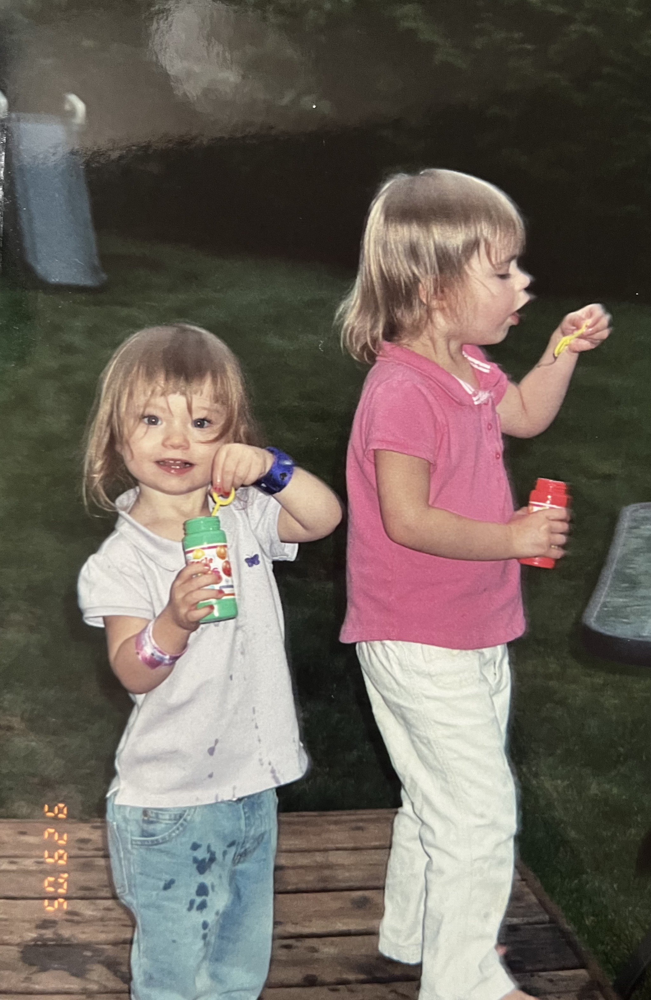
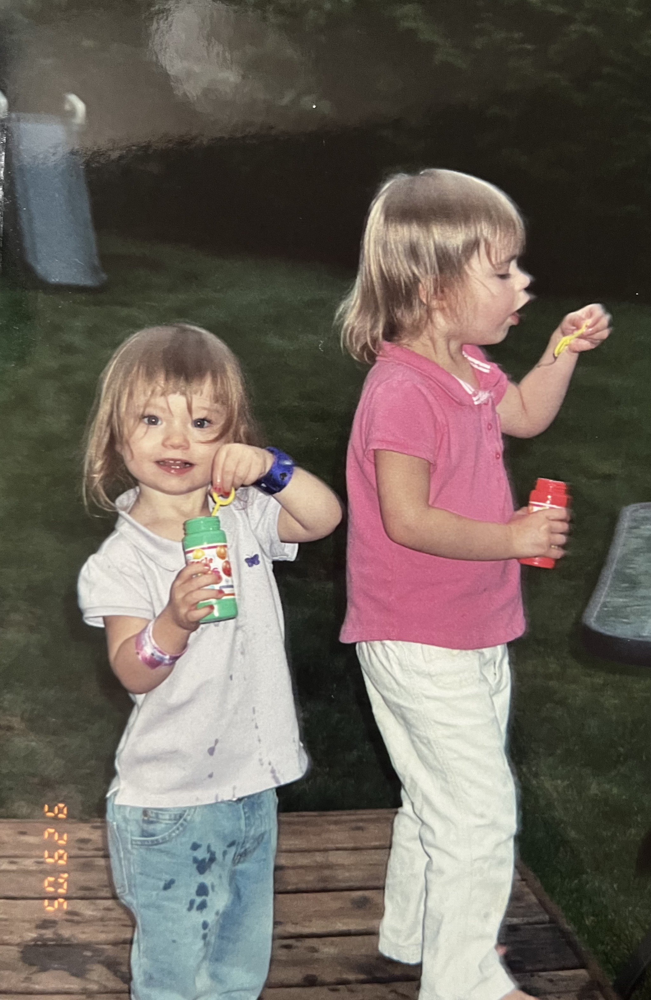

My West Coast Travels:
I have been to all 3 states on the West Coast.
California

I have been to California more times than I can count and because of that I will just do an overview of my California trips and some of my favorite memories there. I will also include entries of some of my most recent trips since these are the ones I remember most. Keeping that in mind, this is a very long entry.
California Trips during My Childhood
My grandma and grandpa had a yearly timeshare in California, up until 2025.
Every year my dad's side of the family and I would visit California at the end of May (usually around my grandma's birthday).
We spent most of our time at the beach and I love love loved these trips.
I think my whole family always looked forward to our trips here and my parents even got married in California in 2014.
I spent my time hanging out with my cousins usually or with my immediate family.
Often, we would go boogie boarding or just swim in the ocean, something I loved to do with my dad when no one else would go out with me.
We typically would visit my uncle Pat who lived in Laguna as well.
I think almost every year we went, we stayed in Carlsbad and as me and the other girls (my cousins) got older, we would go to the shops as well.
Majority of the time we would just lay out at the beach though.
I also remember other trips when I was younger with some of the same family, some with other family members, and one with friends as a kid.
I specifically remember going to Disneyland with my immediate family and with other women on my mom's side of the family.
One year, I even had an annual pass and one of my all-time favorite memories is sitting in the car at in the Disneyland parking lot singing “My Girl” with Nana, Z, my mom, Alyssa, and Aunt Julie.
I have so many fond memories of California and the people I visited it with.
There was also a year I went with just Nana, and she took me to the San Diego Zoo one year, and to Disneyland another.
That was also the same trip I took surfing lessons and surfed for the first time.
I knew then that I loved surfing and wish I could do it more often/get better at it.
A lot of my trips were also just with my grandma and cousin Brittany, which were always a lot of fun as well.
California Trips as an Adult
With friends
July 2021 (Six Flags)
I have been on six trips to California with friends. Once was with Zane and our friend Danny and Gavin. We stayed by the beach - our hotel was a walking distance to the beach - for 4 night/5 days. Our first day was just getting settled and visiting the beach. The following two day we spent at Six Flags. This was the same summer I lifeguarded at Six Flags Hurricane Harbor in Phoenix, so I was able to go for free and bring a guest. Gavin and Danny unfortunately had to pay to get in. I loved Six Flags, but the first rollercoaster I went on I got stung by a bee on the first drop. Zane ended up getting the stinger out with his credit card. Besides that, the other rides were all super fun, although I don't know if I will ever ride X2 again. I'm proud of myself for going on it once, but I think I'm fine with leaving it at that, haha. One of these nights, we all wore Hawaiian shirts to go get dinner at a Hawaiian barbeque place down the street from us. Our last two days were spent swimming at the beach, going to the Santa Monica pier, then heading back home. Overall great trip that reminded me once again how much I love swimming in the ocean with people and I would for sure go to Six Flags again.
November 2021 & January 2022 (Harry Styles - explained later)
This is a trip I went on with my roommates at the time; Cara, Lauren, and Vaikhari.
We decided to go to LA for the Harry Styles Concert and stay at Cara's House.
This was such a fun trip where we went to Phil's, went to the beach, went to the boardwalk, and even got surf lessons from her brother.
We also took an exam together of a class we all were taking and watched La La Land together.
Unfortunately, Harry Styles delayed his concert a day so we switched our flights to be the following night - in which we wouldn't get home until 3 AM the morning of mine and Vaikhari's OChem midterm.
We we're going to make it through it though. Unfortunately, we woke up to Harry Style's first-time cancellation of a concert.
We were devastated but made the most of it. We went for a long bike-ride along the beach then studied at the library that day until we had to leave for our flight.
Honestly, I wasn't mad that it was cancelled, because we got to go back in January for the make-up concert.
So, we made our way back in January, this time with Danny and Zane so we could drive instead of flying this time.
It was a shorter trip, but still very fun, nonetheless.
The thing I remember most from this trip (besides the concert obviously) were the clogged toilet and playing spike ball on the beach lol.
The concert itself was so much fun and we all wore boas in different colors and correlated our outfits with those colors - Lauren in blue, Cara in purple, Vaikhari in pink, and me in green.
Another amazing trips for the books… or the blog.
December 2022 (Disneyland)
My second trip to California with friends was a big group of us going to Disneyland.
It included Zane, Danny, and Gavin again, as well as Ayden, Tommy, Ryan, Kalini, Noah, and Aubri.
Zane, Ryan, Noah, Aubri, Kalini and I all stayed in a hotel room (with two queens and a bunk don't worry) while the guys stayed at another hotel.
Both of which were about a mile/mile and a half from Disney.
On our way there, I made everyone stop to get Philz, obviously.
Our first night was spent at Downtown Disney, where we all got dinner.
The following day we woke up bright and early to get to Disneyland.
It was so much fun, I will for sure remember this trip forever.
One of my favorite memories was us going on splash mountain around 4 or 5 times and using a roulette app to determine the order we would sit each time.
Safe to say we were all SOAKED and freezing, since it was in December.
Some went back to the hotel to change, some bought new clothes, and most of us just let ourselves air dry.
After a long day at Disney and watching the fireworks at night, we went out to dinner at a place across the street.
The following day was spent at California Adventure.
What I remember most from this day is going through the Cars single rider multiple times, watching Fantasmic, and getting soaked two more times from Grizzly River Rapids.
Since it was still so cold, no one was in line for the rapids.
This meant that we were able to go on the ride around 5 times in a row during the day and like 8 times in a row that night.
It is honestly one of my favorite rides and it was so worth it.
Our last full day was spent at Disneyland again (no Splash Mountain this time lol).
It was just another day full of rides and fun, genuinely one of my favorite trips.
We were soaking in our last bit of time there before heading home the next day.
I had to take a flight the next morning to make family photos back in Peoria.
The rest of my friends all went out to the Santa Monica pier and spent the day there before heading back. Another 10/10 trip.
July 2024 (Visiting Cara's)
This was somewhat of a spontaneous trip. I flew out to stay with Cara alone for a weekend. We spent our time hanging out, watching the sunsets, swimming at the beach with her friend Amy, going to the bars (my first time going to a bar in the U.S. actually), and bike riding. In fact, we ended up going on a 20-mile bike ride along the beach and to the marina. Very fun trip that cost me less than $150.
With family
I went a few times with my family as an adult.
One was on a trip for my 20th birthday, which we spent at Disneyland.
Zane tagged along for this one and we spent the rest of our days at the beach and one at the San Diego Zoo.
Zane carried Lindsay's daughter Lyla on his shoulders, and she absolutely loved him.
We also visited the tide pools and got family pictures on the beach.
Another time was just with my immediate family, Zane, and Nana where we stayed at a condo on the beach and spent a day at Disney as well.
If you can't tell my family loves Disney and I went again that same year for my cousin Sammy's 8th birthday.
I went with Nana, Noah, and my Aunt Julie, while Z stayed with her kids (Sammy and Jacob).
The day we drove up was fourth of July, so we got to sit and watch the fireworks outside our hotel.
Our first full day, we met up with them for a day in Disney, but we spent the other two days separately at Disney and California Adventure.
On our fourth day, we went out to a nice lunch, then went swimming at Z's hotel with her boys.
Overall, it was a really fun trip.
I also went one time just with Papa for my interview at the USC dental school.
We stayed at the USC Hotel so that we could be close to the school.
The day we got there, we decided to walk around the campus to check it out.
It was honestly such a beautiful campus and it was so nice outside.
I kept taking pictures because of how nice the school itself was.
That night we ended up getting Wing Stop and watching a movie together before going to bed.
The next morning, I had my interview for a few hours, which went so well, and I ended up getting a spot at the school.
Following the interview, we decided to go to the Santa Monica Pier and walk the beach and pier.
It was very enjoyable, and I'm glad we stayed to do that instead of driving home early.
After we got back, we stopped at the USC Village where the Trader Joe's and restaurants were.
It was really nice, and we ended up getting dinner and snacks at the Trader Joe's before heading back to the hotel to watch something together and go to bed.
I ended up falling asleep while trying to read on my laptop for an assignment lol.
The next morning, we drove home and stopped at a Starbucks on the way home, which I found out Papa liked (we had also got Starbucks one of the mornings we were there).
I enjoyed getting to go on a trip just us and talking on the road together.
I am sure there are so many trips I am missing and that there are even more to come.
California is one of my favorite places as well as my family and I see myself going here often.
Oregon
I have also been to Oregon many, many times since I have family that lives there. In fact, my mom was born there.
Oregon was actually the first place I travelled to at just a few months old.
Since I have been so many times, I decided to just make it one entry that has an overview with some of my favorite memories.
There will also be additional pictures from Oregon around the Washington entry.
I have many memories of Oregon, and it's one of my favorite places to travel.
Growing up, I would often ask to go to Oregon as my birthday and/or Christmas presents, and that's what I got some of the years.
I also used to go around fourth of July a few years.
I used to travel with my grandma often, with my mom, my immediate family, or even on my own.
I think and hope that I will even live here at some point in my life. I had applied to dental school here, interviewed, and toured, but still haven't heard back.
I also applied there for undergrad but ended up staying in Arizona.
While visiting, I would often spend some time staying at my great grandma's house, who I called Old Nana.
Other times I would stay at my Aunt Leenie's who has a daughter my age, Allie, and a younger son, Brady.
At Old Nana's, she would always give me princess treatment while staying there.
Our family has always used and passed down Fiesta ware plates, bowls, etc.
She used to make me fancy breakfasts, lunches, and dinners on Fiesta ware and would make it fun by having tiny pitchers where we could pur our own sauce and another for whatever drink we chose.
She was our family “queen,” and she knew it. She also treated the rest of us like royalty.
We would also spend lots of time hanging out on the couch just talking, she was such a great conversationalist, and we could do that for hours.
I remember one year spending New Years Eve on that couch with her.
She had her own recliner that she always sat in though, and everyone knew that was her throne. I miss spending my time there.
Other times, I'd stay at Leenie's and have sleepovers with Alli.
Often, we would play the sims as we got older but enjoyed time in the backyard or even swimming sometimes.
The weather was always great there, even in the rain (I very much loved the rain).
I remember this being a fun house and we would play all day and even get to stay up late into the night often.
I believe I stayed here as well when my mom graduated with her masters degree at Concordia.
A funny memory I have here is taking a bath with my cousin Brady when he was a baby, and I was very little, and he pooped while we were both in there.
I had never been so disgusted in my entire baby life lol.
Lots and lots of fond memories here.
My Aunt Carrie also lives up in Oregon, and she lives on a Christmas Tree Farm.
It honestly is a dream. I remember staying here when I was younger and sharing a room with Z.
One of my favorite memories is waking up and hearing the birds chirping and hearing people chatting downstairs while breakfast was being made.
I also stayed here one night recently while touring the dental school.
She has a bunch of land and a playground, that I loved playing at growing up.
Me and my cousins used to also catch crickets in jars and collect eggs from the hens.
I really enjoy visiting her house, and my aunt is such a fun and kind person to be around.
Although, I have been to Oregon many, many times, I have never been to the coast, or to the waterfalls… I will someday though.
I do remember going to the farmer's markets though, where they have the absolute best produce.
I ate an entire carton of strawberries on the way home once.
Actually, my great great grandpa owned a blueberry farm in Oregon.
I also remember visiting the food trucks and the market downtown.
I went to the market after visiting the dental school in October of 2024 as well.
I fell even more in love with Oregon visiting in the fall.
The view was just so amazing, and they have so many pretty colors.
The school itself looks over the hill of downtown and the water.
It was so beautiful. On our way from my Aunt Carrie's back into town, we even stopped by the Carver Café from Twilight, which is also close to where I went camping in Oregon.
I have been a few times and its just the absolute best place to go camping.
My Aunt Carrie also has a boat out by the campsite that I've been on and remember tubing on (need to go again).
Oregon is honestly one of my favorite places in the world and I do plan to live here someday.


Washington
I have been to Washington 3 times I believe but may have forgotten some trips from when I was younger.
One of these trips was when I was a child and the other two are from 2022 and 2024 and were both for less than a day.
Keeping this in mind, I don't have many pictures from these trips and will instead include some extra photos from Oregon (in addition to the few I have of Washington).
During each of these trips, I spent my time in Seattle.
The first time, I was quite young and was visiting Nana's cousin, Kristen and her wife and kids.
I do not remember much from my first trip besides kayaking with them where Kristen used to do rowing in college (at UW and she was really, really good - she's in the hall of fame if you ever check it out).
My trip to Seattle in 2022 was to go on an Alaskan cruise - with Nana, Leenie, Alli, and Brady (go see that entry under “Other States”).
Nana and I had flown into Portland to then drive up to Seattle together to our port.
We ate a nice lunch out by the water then headed to our cruise ship.
After our cruise, we were back in Seattle and decided to stop by to visit Kristen, Meg, and some of their kids who were currently there.
We ended up hanging out and chatting for quite a while, and Stella showed me their cats.
We also went out to eat with them and watched the kids play basketball for a bit.
After some time of visiting, we drove back to Portland and stopped at a Starbucks and for some gas.
Unfortunately, Aunt Leenie (who is not used to putting gas into her car since she lives in Oregon) had accidentally put diesel in her car.
It ended up being fine for the rest of the drive, but she immediately took it in as soon as we got back to the house.
My trip to Seattle in 2024 was another short one to go visit the dental school.
I flew into the Portland Airport the night before with Nana and we stayed at a nearby hotel.
The following morning, we drove out to Seattle to make the UW School of Dentistry Open House.
The drive there was so beautiful, I wish we had more time to stay there, but I had to be back in Portland the next morning to tour their school (and I had come straight after a lab to the airport the night before).
Our first stop was to visit Kristen and Meg.
None of the kids were home since they were in school.
It was nice getting to chat with them for a bit before heading for the tour.
They gave us some food and I even got to try bone broth for the first time.
I was then dropped off at the school for the tour.
By the time the tour started (after the presentations) it was already dark out.
I wasn't really able to see much of the school, not even the clinic.
We did a short tour inside the building that they share with the medical school and then it was over.
I wish I was able to see more of the school - especially during the day.
I think I would have fallen in love with it and ultimately decided to go when I was accepted back on decision day.
Following the tour, I headed to the light rail to go meet up with Nana and Kristen.
I totally got messed up on the light rail and ended up taking 3 different cars to get to the right stop haha.
I was so tired and frustrated, I was so grateful to get back to the car.
There was a football game that night and this was in November, so I was quite cold as well.
Once we got back to their house, we sat and visited for a bit and saw the kids since they were home from school at that point.
I wish I was able to visit again, and I could have during their “second look” of the school, but that was the same day I would be in New York so it never worked out.
I should have visited the city and rest of school, Nana and Papa both offered to take me, but I was caught up in other things and ran out of time to decide.
I would love to go back to Seattle and actually see the city, the water, and the school.
I think I would really love it there and I regret not keeping it as an option for dental school when I got accepted.
I had so many things going on at the time I felt like I didn't know how, or when, to decide.
I ended up declining on the last day I was able to - in hopes of possibly getting into Oregon since I loved it there and felt like that's where I would go in the PNW.
I ended up putting a deposit in at the school back at home instead.
Maybe it could have been great, but I felt like I did not have much to go off of besides the school's reputation and renown for being a pretty campus (that I wouldn't really get to see).
The building that the dental school was in kind of felt like a maze and I didn't see many windows.
It felt a bit off and they also mentioned doing renovations to the school and clinic while we would be going there and I am not sure how that would have affected my time there.
The dental school has a great reputation and a small class size, but I felt like I knew so much more and felt more confident sticking to the school at home.
I will definitely update this entry once I actually get to see around Seattle.
 
